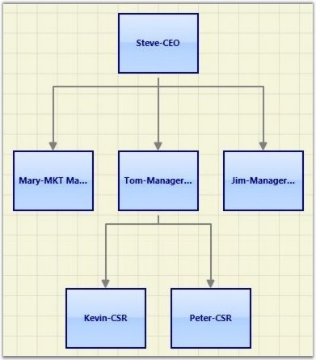

The Directed-Tree layout allows you to arrange the nodes in a tree-like structure. This layout can be applied to any diagram that comprises a directed tree graph with unique root and child nodes. This makes creating diagrams easier because the node position is determined automatically, based on the connections. However, it is necessary to specify a layout root for the tree layout. The Directed-Tree layout will position the nodes based on the layout root.
Orientation
The Layout Manager lets you orient the tree in many directions and create sophisticated arrangements. The Orientation property of the Diagram model can be used to specify the tree orientation.
· TopBottom - Places the root node at the top and the child nodes are arranged below the root node.
· BottomTop - Places the root node at the bottom and the child nodes are arranged above the root node.
· LeftRight - Places the root node at the left and the child nodes are arranged on the right side of the root node.
· RightLeft - Places the root node at the right and the child nodes are arranged on the left side of the root node.
The Bounds property of the DiagramView class can be used to
specify the position of the root node based on which the entire tree gets
generated.
Table 5: Property Table
|
Property |
Description |
Type of the property |
Value it accepts |
|
VerticalSpacing |
Gets or sets the Vertical spacing between nodes. |
CLR property |
Double |
|
HorizontalSpacing |
Gets or sets the Horizontal spacing between nodes. |
CLR property |
Double |
|
SpaceBetweenSubTrees |
Gets or sets the space between sub trees. |
CLR property |
Double |
|
Orientation |
Gets or sets the orientation. |
CLR property |
TreeOrientation.LeftRight TreeOrientation.RightLeft TreeOrientation.TopBottom TreeOrientation.BottomTop |
|
Bounds |
Gets or sets the bounds value which specifies the position of the root node in case of tree layout. |
CLR property |
Thickness |
Methods
Table 6:Methods Table
|
Name |
Parameters |
Return Type |
Description |
Reference Links |
|
RefreshLayout() |
Null |
void |
Refresh the layout |
N/A |
The following code shows how the automatic layout can be generated.
1. The LayoutType should be set to DirectedTreeLayout in DiagramModel class.
|
[XAML]
<Window x:Class="RadialTreeLayout_2008.Window1" xmlns="http://schemas.microsoft.com/winfx/2006/xaml/presentation" xmlns:x="http://schemas.microsoft.com/winfx/2006/xaml" Title="Radial Tree Layout Demo" WindowState="Normal" WindowStartupLocation="CenterScreen" Name="mainwindow" xmlns:syncfusion="http://schemas.syncfusion.com/wpf" Icon="App.ico" FontWeight="Bold" xmlns:local="clr-namespace:RadialTreeLayout_2008" Height="1000" Width="900"> <!--Diagram Control--> <syncfusion:DiagramControl Name="diagramControl">
<!-- Model to add nodes and connections--> <syncfusion:DiagramControl.Model> <syncfusion:DiagramModel LayoutType="DirectedTreeLayout" Orientation="TopBottom" x:Name="diagramModel"> </syncfusion:DiagramModel> </syncfusion:DiagramControl.Model>
<!--View to display nodes and connections added through model.--> <syncfusion:DiagramControl.View> <syncfusion:DiagramView Name="diagramView"> </syncfusion:DiagramView> </syncfusion:DiagramControl.View> </syncfusion:DiagramControl>
</Window>
|
2. Then, the nodes are defined and the connections are made.
|
[C#]
Style s = (Style)this.Resources["{x:Type sfdiagram:Node}"];
Node CEO = CreateNode("CEO", "CEO of the company", "Steve-CEO", s); Node SLS = CreateNode("ManagerSLS", "Tom-ManagerSLS", "Sales Manager of the company ", s); Node Marketing = CreateNode("ManagerMarketing", "Mary-MKT Manager", "Marketing Manager of the company", s); Node DEV = CreateNode("ManagerDEV", "Jim-Manager DEV", "Development Manager of the company", s); Node CSR1 = Node DEV = CreateNode("CSR1", "Kevin-CSR", "CSR of the company", s); Node CSR2 = Node DEV = CreateNode("CSR2", "Peter-CSR", "CSR of the company", s);
//The layout happens with respect to the layout root. diagramModel.LayoutRoot = CEO;
//Add the nodes to the model. diagramModel.Nodes.Add(CEO); diagramModel.Nodes.Add(Marketing); diagramModel.Nodes.Add(SLS); diagramModel.Nodes.Add(DEV); diagramModel.Nodes.Add(CSR1); diagramModel.Nodes.Add(CSR2);
//Creating the Connections between the nodes. Connect(CEO, Marketing); Connect(CEO, SLS); Connect(CEO, DEV); Connect(SLS, CSR1); Connect(SLS, CSR2);
Node CreateNode(string Name, string Label, string ToolTip, Style s) { Node NewNode = new Node(Guid.NewGuid(), Name); NewNode.Label = Label; NewNode.ToolTip = ToolTip; NewNode.CustomPathStyle = s; return NewNode; }
//Creating connection and adding to the model. void Connect(Node HeadNode, Node TailNode) { LineConnector connection = new LineConnector(); connection.ConnectorType = ConnectorType.Orthogonal; // Specify the TailNode node connection.TailNode = TailNode; //Specifying the Head Node connection.HeadNode = HeadNode; connection.TailDecoratorShape = DecoratorShape.Arrow;
//Adding to the Diagram Model diagramModel.Connections.Add(connection); } |
|
[VB]
Private s As Style = CType(Me.Resources("{x:Type sfdiagram:Node}"), Style)
Private CEO As Node = CreateNode("CEO", "CEO of the company", "Steve-CEO", s) Private SLS As Node = CreateNode("ManagerSLS", "Tom-ManagerSLS", "Sales Manager of the company ", s) Private Marketing As Node = CreateNode("ManagerMarketing", "Mary-MKT Manager", "Marketing Manager of the company", s) Private DEV As Node = CreateNode("ManagerDEV", "Jim-Manager DEV", "Development Manager of the company", s) Private CSR1 As Node = Node DEV = CreateNode("CSR1", "Kevin-CSR", "CSR of the company", s) Private CSR2 As Node = Node DEV = CreateNode("CSR2", "Peter-CSR", "CSR of the company", s)
'The layout happens with respect to the layout root. diagramModel.LayoutRoot = CEO
'Add the nodes to the model. diagramModel.Nodes.Add(CEO) diagramModel.Nodes.Add(Marketing) diagramModel.Nodes.Add(SLS) diagramModel.Nodes.Add(DEV) diagramModel.Nodes.Add(CSR1) diagramModel.Nodes.Add(CSR2)
'Creating the Connections between the nodes. Connect(CEO, Marketing) Connect(CEO, SLS) Connect(CEO, DEV) Connect(SLS, CSR1) Connect(SLS, CSR2)
Node CreateNode(String Name, String Label, String ToolTip, Style s) Dim NewNode As New Node(Guid.NewGuid(), Name) NewNode.Label = Label NewNode.ToolTip = ToolTip NewNode.CustomPathStyle = s Return NewNode
'Creating connection and adding to the model. void Connect(Node HeadNode, Node TailNode) Dim connection As New LineConnector() connection.ConnectorType = ConnectorType.Orthogonal 'Specify the TailNode node connection.TailNode = TailNode 'Specifying the Head Node connection.HeadNode = HeadNode connection.TailDecoratorShape = DecoratorShape.Arrow
'Adding to the Diagram Model diagramModel.Connections.Add(connection) |

Figure 20: Directed-Tree Layout
Layout Spacing
Spacing between the nodes with respect different levels and siblings are adjustable; this will be helpful to adjust the distance between nodes, so that it will meet many business needs. As this is a general topic between all layouts, detailed explanation about this can be found in Layout Spacing under DiagramModel.
Refresh Layout
When there are changes in content of the page link new nodes and connectors added, the layout has to be refreshed to get the page’s content aligned again to give space for new contents. To refresh the layout please follow the following code snippet.
|
[C#]
DirectedTreeLayout tree = new DirectedTreeLayout(diagramModel, diagramView); tree.RefreshLayout(); |
|
[VB]
Dim tree As New DirectedTreeLayout(diagramModel, diagramView) tree.RefreshLayout() |
Here diagramModel and diagramView is an instance of
DiagramModel and DiagramView respectively.
See Also